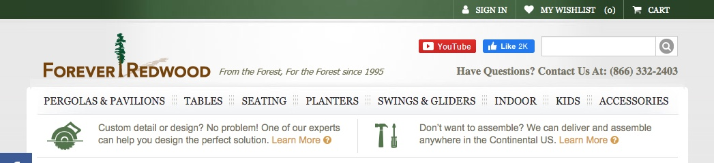
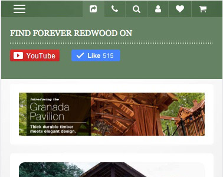
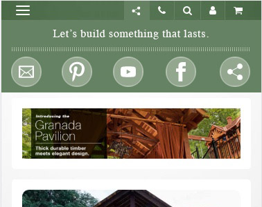

For the sake of this article, I'll be discussing the use case of one client and their social side bar. The use of a specific client, as opposed to a generalized case, is relevant to the discussion. Social media integrations should always be customized. This article will explain how and why. So, I'll be walking through design decisions for a specific company, but explicating the questions which lead to those decisions, questions which are relevant to all firms.
There's no chance of keeping my client anonymous because this design solution is so tailored to their needs and this prototype has been built to be ported to their system with minimal change. So, let me introduce you to Forever Redwood. These guys do some really cool stuff. They are at the very frontier of preserving North America's temperate rainforests without any real assistance from government programs — which is wild because much of the destructive logging industry is entirely dependent on government subsidies. end rant.
Let's start with the diagnosis
The most immediate concern is about those garish colors. Forever Redwood's color scheme is the single most well developed component of its brand identity.
That's just pretty.
Why throw that off by including a bunch of garish social media brand colors when logomarks would suffice?
Next, with the assistance of those garish distracting colors, we can see that there are two different areas of the home page which include social media buttons. Why? What is the benefit? More critically, what is the risk? We know that, for many people, social media is a habit forming vice. By contrast, a major home project may be tempting to procrastinate because of the expense and the risk. Giving so much real estate to social media is a little like putting vending machines at both ends of a hall in a weight loss center. We're just drawing attention to something it would be easier to binge on rather than complete a domestic project. Having some social media connection serves a purpose, but it isn't the purpose of the site. If you squint a little and look at that picture, though, what are your eyes drawn to? There's a good chance that it's those bright red and blue buttons that stand out from the rest of the page.
Getting to the meat of the opening claim, when the site visitor clicks on that Facebook button, what do they expect to happen? Well, since it's just a Facebook icon on a firm's homepage, the intuitive occurrence would be that the firm's Facebook profile would pop open in an adjacent tab. What actually happens?
"Well that was presumptuous." — direct quote from my roommate who I had test the original interface. My roommate is in the trades, no UI/UX experience; she's a great tester.
Using this button to prompt a share is counterintuitive, pushy, jarring, hacky, and a little rude.
The same goes for Twitter.
Pressuambly, we're all familiar with the anti-social behavior that is cat calling? Frequently it goes a little something like, "Hey hot mama, you wanna have my baby?" or some more lewd variant thereof. We take it for granted that this behavior is obviously deplorable. Maybe it's just how crass the language is. Maybe it's the intrusion. Though, we've probably all heard examples where similarly awful pickups were neither crass nor interruptive, yet the effect was just as bad.
Imagine someone dropping that same kind of backward compliment at an otherwise reasonably opportune moment and without any vulgar speech, "Hi, you are so beautiful. I would really like to reproduce with you." Actually creepier, right? Let's make it less extreme. "Hi, gorgeous. I know I haven't even introduced myself, but do you want to make out?" Or, "Hey you, I see you just looked my way. You wanna tell all your friends how cool I am?" I hope the connection is becoming apparent.
The time for prompting a user to share your page is after you've shared a moment together. Otherwise, just like in the examples above, how do you even know if you want that person talking about you to their friends? If you've received no signal of affirmation from someone, don't ask them to recommend you.
An example of when it would be appropriate to prompt a share: A user has added an item to their cart and wandered off. That they deliberately entered into the act of purchasing is the affirmation. It says, "I like this. I want this in my home." Maybe they come back a day later, maybe you give them an alert when they go to close the tab. A modal pops up and says, "Hi, we noticed that you've been thinking about purchasing a Forever Picnic Table. We appreciate the time and care it takes to craft a comfortable home. Click here to share this item with your network. Your loved ones can weigh in on the furnishings that you'll enjoy together at barbeques and potlucks for years to come."
boom.
We can see in the above example that the ask is proportional to the affirmation and relevant to the interests of our prospect. That's what makes this respectful marketing.
Okay, without further ado, here are the design decisions:
(mobile second. take that, trendos.)
Prognosis
Top Bar
Here's what the top of the site currently looks like:
Here we have some substantial improvements:
What changed? Well, we eliminated the inappropriately prioritized social media elements. We got rid of that wishlist button that doesn't do anything for the user. We gave the composition a little breathing room, which in combination with the loss of those garish colors makes the whole interface a little more comfortable. The tagline has a better relationship to the logotype. And, we humanized the call to action.
Actually, let's look at that. The original CTA is solid, text book, inviting even — technically. It also has the brash staccato of a drill sergeant. When the old guard marketing rules were sent down from on high they mandated clear calls-to-action delivered in active voice. And that's the big key. A CTA needs to be in active voice. A gentle touch should not be mistaken for passivity. Semantically, "We'd love to hear from you." is an active voice statement. It is a clear declaration. It is a promise. It is as bold and inviting as it isn't a ham-fisted command.
Side Bar Order
So, the original sidebar starts with Facebook and proceeds down through some popular platforms, shown below. It also includes a prompt to email someone about Forever Redwood and one for … donating to the Red Cross, maybe. ¯\_(ツ)_/¯
It would appear that these platforms are listed in order of their market share. What does that have to do with where the public is positively interacting with this brand or where this brand is succeeding at communicating its message? Nothing. The fact that Facebook is more popular than Pinterest has nothing to do with the interests or enjoyment of either the customer or the firm in the context of this relationship.
The recommended form and sequence is pictured on the left. It starts with a newsletter sign up form trigger. Why? Because all efforts put into social media platforms are digital sharecropping. Let's face it. We're all small actors in this internet game. We have to spend some time laboring in fields we don't own. But let's put building our own audiences first.
Pinterest is up next. People actively and organically enjoy Forever Redwood on Pinterest. This firm is more successful on that platform for the degree of invested effort than anywhere else. So, it goes first and is followed by lower performing platforms in the context of the firm — not the overall market.
Sharing
At the bottom I've got a sharing icon, as opposed to a button that seems to be a request for medical support. Now, above I talked about how the request to share shouldn't be thrust upon someone. That doesn't mean that we don't provide an option to opt-in to sharing, and a clear representation that sharing is what the button is for. Also, even though this button is provided for those who are seeking to share Forever Redwood with their networks, we still pause to express gratitude for the visitor who has chosen to promote someone else's business. Let's be realistic here. This person is on the internet. There are more gratifying things they could be doing than sharing pictures of gazebos with their friends.
We all know the true purpose of the internet.
The original interface includes a bonkers long list of options. It includes MySpace but oddly not Friendster, also a ton of other options. Here's the top of the list; you'll notice that it's alphabetical and this shot only makes it to 'B'.
What's the point of that? If someone really loves BizSugar, whatever that is, then they know how to share things there. The relationship between Forever Redwood and its audience is much better served by providing a bit of engagement, some gratitude, maybe a snippet of the brand's story which may make it into the user's outbound message, and a tidy list of platforms where the firm is already succeeding.
Color
So, you'll notice that the whole social sidebar to the left is in one color. You may have also noticed that it isn't the SQGLZ brand green used for the photo screen in the hero section of this article. This green is the same green used for the tool icons on the Forever Redwood homepage. So, this widget, as pictured, will blend seamlessly into Forever Redwood's site. None of the meaning of the icons in the widget is compromised by not using the Facebook blue or the YouTube red.
And, as promised,
Mobile
I'm just going to cover mobile in mocks because, the social sharing is integrated into the nav on mobile, which is as it should be. Let's not consume persistent screen space when we have so little. And, not knowing anything about the nav architecture, whatever I build would likely have to be rebuilt anyhow.
So, here's the mobile view at present.
First thing. Make the nav a fixed element. Some of the pages on this site get really long on mobile and we want users to be able to get around without scrolling back to the top. And, obviously, we want to get rid of the wishlist (heart) here as well. Let's also center that tagline.
The current state of the social tab on mobile is oddly inconsistent with both the desktop version and with itself. The YouTube icon, pictured below, navigates to the Forever Redwood YouTube profile. While the Facebook icon just does this …
Why does it say, "Find Forever Redwood on" and then display a Facebook button which doesn't navigate to the Facebook profile? There's actually no way to navigate to the Facebook profile from the site on mobile or desktop, despite the visual dominance that Facebook is given on the site.
Let's try something more like this:
QED